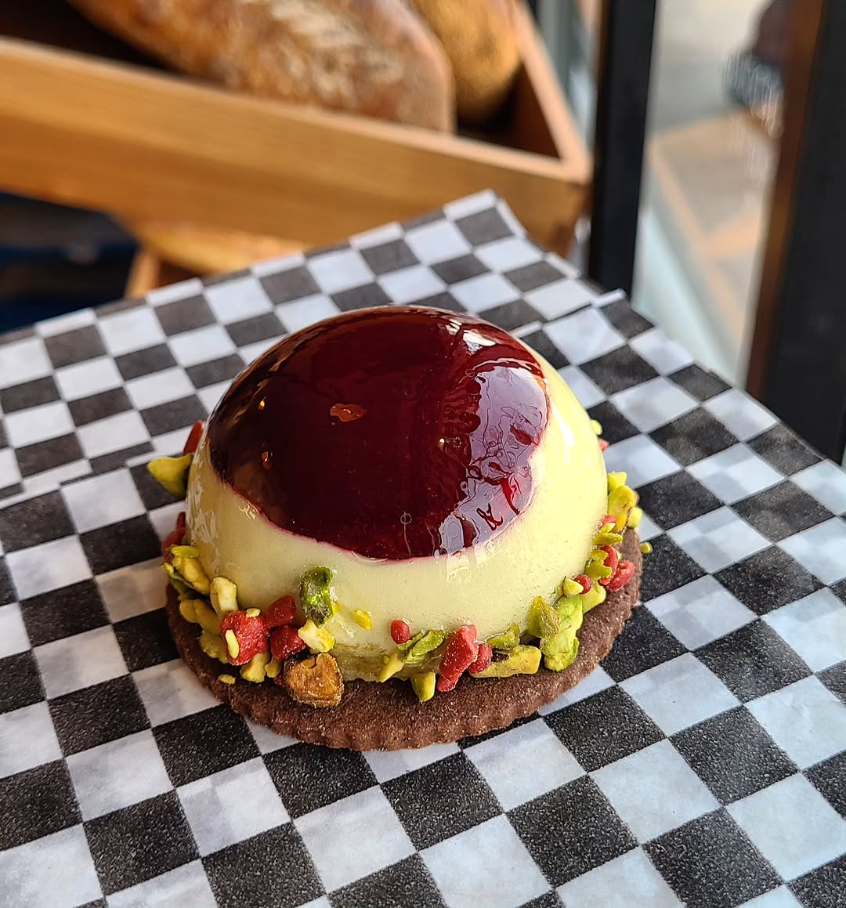
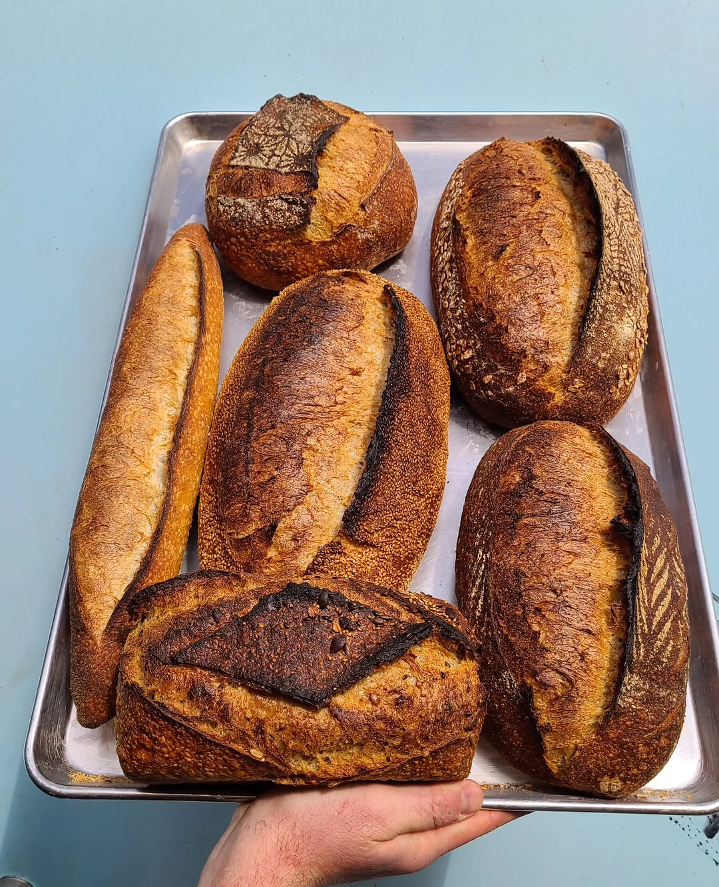

Why this place matters
A farmers' market bakery that got its own corner.
Jupiter started in 2023 as a farmers' market operation before taking over the old Glory Hole Doughnuts space in late 2025. Press coverage keeps coming back to the same thing: Forster trained seriously, uses flour from Howick Community Farms, and built the shop around simple bread that tastes like real grain instead of stabilizers and shortcuts.

From the bakehouse
Good bread first. The rest follows.
Jupiter's own materials are pretty restrained. That's part of the appeal. No giant brand speech, just bread, pastry, espresso, and a clear schedule.
The useful detail is underneath that restraint: Blackbird Baking and Petite Thuet in the background, Ontario ingredients, and long fermentation at the center of the menu.
If you want the newest pastry run or the loaf people were lining up for that morning, Instagram is still the fastest read on what's happening day to day.